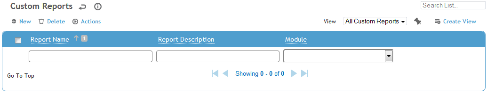
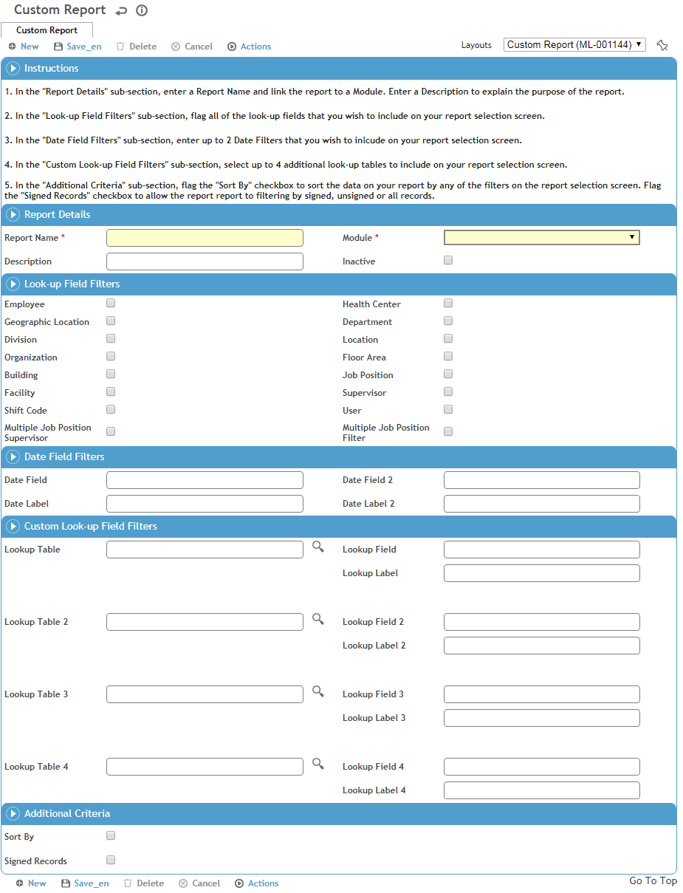

5.3.1 Adding a Custom Report to the Reports List
To add a custom report to the Reports list:
- Select Administrator > Tools > Custom Reports.

You must have administrative privileges to add a custom report.
- Click New to add the new report.
- Follow the instructions provided.
